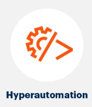
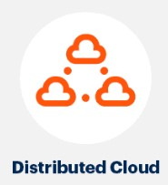

Hyperautomation:

Hyperautomation is the combination of multiple machine learning, packaged software and automation tools to deliver work and it deals with the application of advanced technologies including AI and machine learning to increasingly automate processes and augment humans. In addition to extending across a range of tools, hyperautomation also refers to the sophistication, or steps, of automation (i.e., discover, analyze, design, automate, measure, monitor, reassess.) In that sense, hyperautomation is an expansion of automation in both breadth and depth. Gartner explain it as going from thinking of automation as 'simply' RPA and task automation to thinking of automation as highly sophisticated, AI-based process automation to the level that organizations are building 'digital twins'. To put it simply, hyperautomation is the mix of automation technologies and artifical intelligence that, when combines, augment humans' capabilities, allowing them to complete processes faster, more efficiently, and with fewer errors.
For more information regarding this, please click on this link
MultiExperience:

MultiExperience Development Platforms serve to centralize life cycle activities - designing, developing, testing, distributing, managing and analyzing - for a portfolio of multiexperience apps. Multiexperience refers to the various permutations of modalitites, devices and apps that users interact with on their digital journey accros various touchpoints. Multiexperience development involved creating fit-for-purpose apps based on touchpoint-specific modalities, while at the same time ensuring a consistent user experience across web, mobile, wearable, controversial and immersive touchpoints.
For more information regarding this, please click on this link
Distributed Cloud:

Cloud Computing is not a new concept. In the 1960s, the Massachusetts Institute of Technology's (MIT) Project MAC, a collaborative project on Mathematics and Computation, already carried out computer networking experiments. In 1969, a Computer Networks group was created in order to allow people on different computers and in different locations to access and share the programs and information located on a single computer. It was the beginning of what it was later going to be known as Cloud Computing. One of those gigantic, archaic IBM computers using reels of magnetic tape for memory acted as a primitive Cloud with two or three people accessing it. The cloud expands its territory and becomes a distributed cloud. This is the distribution of public cloud services to different locations while the originating public cloud provider assumes responsibility for the operation, governance, updates to and evolution of the services. According to industry analyst Gartner's report, this represents a significant shift from the centralized model of most public cloud services and will lead to a new era in cloud computing. A distributed cloud means that the computation, storage, and networking are in a micro-cloud located outside the centralized cloud. The distributed cloud is closer to the end-user as a decentralized cloud system.
For more information regarding this, please click on this link